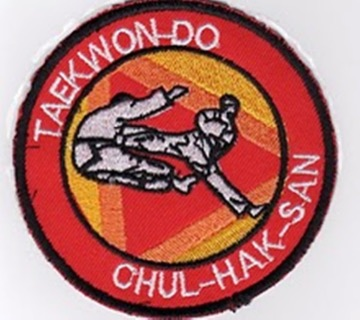

Teoría de Taekwon-Do ITF
Resumen de cada tema, con su página completa de desarrollo, ejemplos y detalles. Usá el buscador o el menú lateral para saltar directo a lo que busques.
La escuela Chul Hak San

- Chul Hak San significa «una filosofía de vida».
- Fundada en 1983 en Buenos Aires por el maestro Omar Severino.
- Es la escuela de TKD ITF más grande de Argentina y Latinoamérica.
- 3 pilares: ser la más grande, ser la mejor y ayudar a todos los que podamos.
- Colores del escudo: naranja = sabiduría · amarillo = iluminación · rojo = pasión.
Historia del Taekwon-Do
- Creado por el General Choi Hong Hi (nacido el 9/11/1918, fallecido el 15/6/2002).
- 11 de abril de 1955: se adopta el nombre «Taekwon-Do» = el camino del pie y la mano.
- 1966: se funda la ITF en Seúl. 1972: la sede pasa a Toronto, Canadá.
- 1967: el TKD llega a la Argentina con maestros coreanos enviados por Choi.
Filosofía y principios
Los 5 principios: cortesía · integridad · perseverancia · autocontrol · espíritu indómito.
El juramento (5 puntos): observar los principios · respetar al instructor y superiores · nunca hacer mal uso del TKD · ser campeón de la libertad y la justicia · ayudar a construir un mundo más pacífico.
Secretos de entrenamiento
Son 9. Los más preguntados: estudiar la teoría del poder, comprender el propósito de cada movimiento, coordinar pies-manos-vista-respiración, y crear el movimiento ondulante.
Mociones
Una moción es cómo se ejecuta un movimiento. La definen 4 variables: velocidad del movimiento, velocidad entre movimientos, movimiento ondulante y respiración.
Las 6 de mano: normal · natural · lenta · rápida · continua · conectada.
Los tules
| # | Tul | Significa | Mov. |
|---|---|---|---|
| 1 | Chon-Ji | Cielo y tierra: la creación del mundo | 19 |
| 2 | Dan-Gun | Fundador legendario de Corea (2333 AC) | 21 |
| 3 | Do-San | Patriota Ahn Chang-Ho: educación e independencia | 24 |
| 4 | Won-Hyo | Monje que introdujo el budismo en Corea | 28 |
| 5 | Yul-Gok | El «Confucio de Corea» | 38 |
| 6 | Joong-Gun | Patriota que asesinó a un gobernador japonés | 32 |
| 7 | Toi-Gye | Erudito del confucionismo | 37 |
| 8 | Hwa-Rang | Jóvenes guerreros de Silla | 29 |
| 9 | Choong-Moo | Almirante Yi Soon-Sin, el barco tortuga | 30 |
Las patadas
Nombre en coreano (terminología ITF, que no es la misma que la de WTF) y video de cada una:
- Ap Cha Busigi — patada frontal
- Yop Chagi — patada lateral
- Dollyo Chagi — patada circular
- Bandae Dollyo Chagi — patada circular inversa
- Furyo — patada descendente («de hacha»)
- Dwit Cha Jirugi — patada hacia atrás
- Twio Dollyo — patada doble (empeine y luego talón)